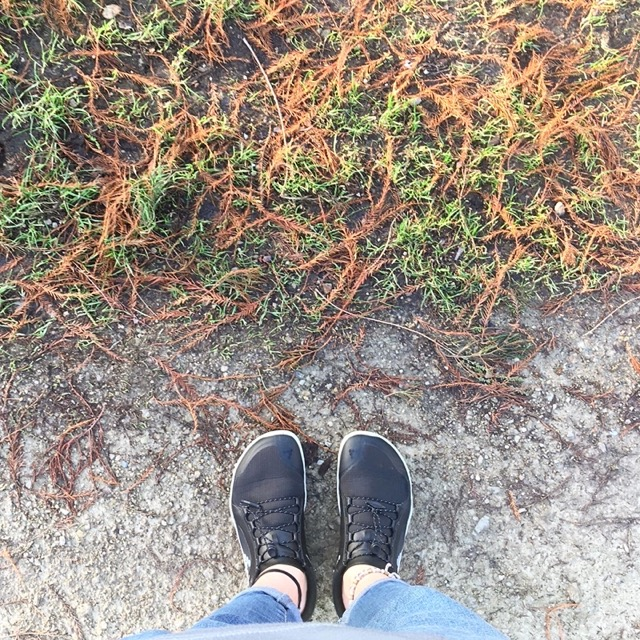
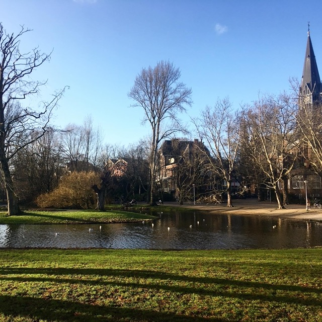

Vivobarefoot Primus in Amsterdam
Posted on
Yesterday I joined AdvancedJS meet-up and I’ve been very early in Amsterdam. So I took an extensively long walk around the city until the event. Vondelpark was included in this walk. I was lucky to have a bright sky. All happened in my new Vivobarefoot Primus All Weather. Very comfortable pair of shoes!
 